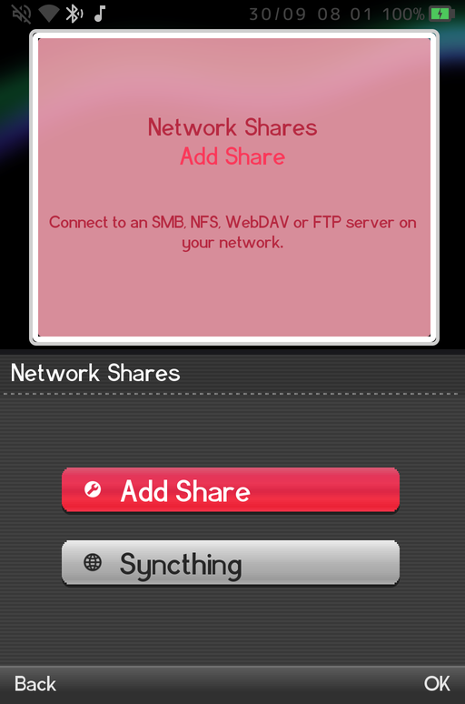
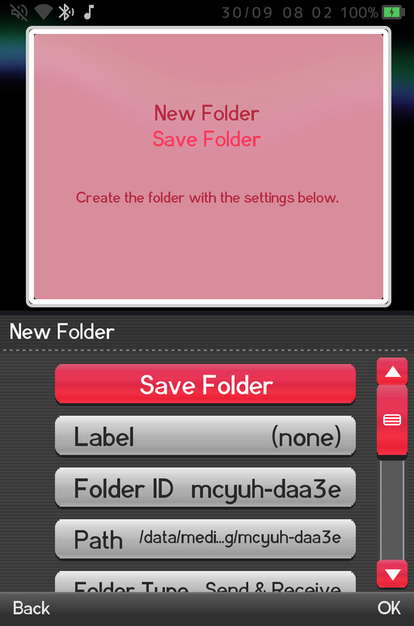
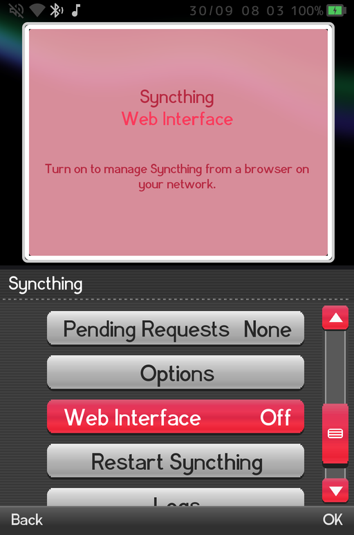

Syncthing keeps a folder on your handheld and a folder on another device identical, over your own network, with no cloud account. Change a file on one side and it appears on the other a moment later. GammaOS Nano ships the official Syncthing service built in, and you control it entirely from the home menu.
Why use it
The classic use is saves. Play a DS game on the handheld, and the save is already on your PC (or your phone, or your second handheld) when you sit down there. Other good uses:
- Keep the DraStic save folder the same on two handhelds, so you can carry on the same game on either.
- Back up RetroArch saves and save states to a PC automatically.
- Drop ROMs, music or videos into a folder on your PC and have them arrive on the handheld.
Syncthing runs in the background, including while games and apps are open, so a save you make in a game is sent without you going back to the home. It only works while both devices are on and can reach each other (on the same Wi-Fi, or over the internet through Syncthing's own discovery and relays).
You need Syncthing on the other device too. It is free for Windows, macOS and Linux from syncthing.net, and on Android phones there are Syncthing apps as well.
Turn it on
Go to Settings > Network Shares and pick Syncthing, the last row.

Turn the Syncthing toggle on. After a few seconds Status changes from Starting... to Running (with the Syncthing version), and the rest of the rows appear. While Syncthing is stopped you only see the toggle and Status.

The Syncthing rows
| Row | What it does |
|---|---|
| Syncthing | Starts or stops the Syncthing service. |
| Status | Stopped, Starting... or Running with the version. The description shows the uptime and any connection problems. |
| This Device | This handheld's name. Select it to show the full Device ID you need for pairing. |
| Folders | The folders you share, and Add Folder to share a new one. |
| Devices | The other devices you sync with (and how many are connected), and Add Device to pair a new one. |
| Pending Requests | Devices that want to connect and folders other devices offer to this one. |
| Options | Device name, discovery, relays and upload/download limits. |
| Web Interface | Opens Syncthing's own web page to other computers on your network (off by default, see below). |
| Restart Syncthing | Restarts the service. Syncing pauses for a few seconds. |
| Logs | Syncthing's recent log, handy when something will not connect. |
Step 1: pair the other device
Syncthing devices find each other by a Device ID, a long code of 56 letters and digits shown in groups of 7. Both devices have to add each other. You only type one ID; the other side can simply accept.
Add your PC on the handheld:
- On your PC, open Syncthing and find its Device ID (in the Syncthing web page on the PC: Actions > Show ID).
- On the handheld, open Devices > Add Device. The on-screen keyboard asks for the Device ID of the other device. Type it in (the dashes are optional).
- A New Device page opens. Give it a Name if you like (shown on this device only), then choose Save Device.
- On the PC, Syncthing shows a message that a new device wants to connect. Accept it.
Or let the other side add the handheld:
- On the handheld, select This Device. A dialog shows the full Device ID. Type that ID into Syncthing on the other device (Add Remote Device on a PC).
- On the handheld, open Pending Requests. The other device is listed as "Wants to connect". Select it and choose Add Device, then Save Device on the page that opens. (Choose Ignore to turn the request down.)
After a short while the device shows as connected in Devices.
Step 2: share a folder
Once the other device is added, share a folder with it:
- Open Folders > Add Folder. A New Folder page opens.

- Label: a friendly name, shown on this device only. The on-screen keyboard opens with the prompt on its own line above the text you type.

- Folder ID: filled in with a random ID. It must match the ID used for this folder on the other devices. If you are creating the folder here first, keep it (or type something readable such as
drastic-saves); the other side will pick the same ID up when it accepts the folder. - Path: select it to browse the handheld's storage. Move into the folder you want to sync and choose Select This Folder. Folders on internal storage and on an SD card both work. The path cannot be changed after the folder is saved.
- Folder Type: - Send & Receive (the default): changes flow both ways. - Send Only: this handheld sends its changes but ignores changes from other devices. - Receive Only: this handheld takes changes from other devices but does not send its own.
- Shared With: tick the devices this folder should sync with.
- Choose Save Folder at the top of the page.
The other device now receives an offer for the folder. On a PC, accept it and pick where the folder should live there.
The New Folder page has a few more rows you can leave at their defaults: File Versioning (keep old copies of changed or deleted files), Full Rescan Interval, Watch for Changes (notice changes as they happen) and Ignore Permissions (recommended on Android storage, and turned on for you on SD cards).
Accepting a folder from another device
If the other device shares a folder with the handheld first, it appears in Pending Requests as "Folder offered". Select it and choose Add Folder. The New Folder page opens with the Folder ID and Label already filled in and the offering device ticked in Shared With. Pick a Path, then Save Folder.
Managing a folder later
Open a folder from Folders to see its state (Up to Date, Syncing and so on), how much is in sync, and extra actions: Paused, Rescan Now, Ignore Patterns (files and folders that should not sync) and Remove Folder. Removing a folder only stops syncing; the files on the handheld are kept.
Worked example: DraStic saves with a PC
DraStic Nano keeps its game saves in Internal storage/drastic-nano/saves (the DraStic Nano Save States page shows the exact folders if you moved them with Game Settings > DraStic Data Folder). To mirror them to your PC:
- Install Syncthing on the PC and open its web page (it opens in your browser when Syncthing starts).
- On the handheld, turn on Settings > Network Shares > Syncthing.
- Pair the two: Devices > Add Device on the handheld with the PC's Device ID, Save Device, then accept the handheld on the PC.
- On the handheld: Folders > Add Folder. - Label: DraStic saves - Folder ID: drastic-saves - Path: Internal storage > drastic-nano > saves, then Select This Folder - Folder Type: Send & Receive - Shared With: tick your PC - Save Folder
- On the PC, accept the "drastic-saves" folder offer and choose a folder for it, for example
Documents\DS saves.
From now on, every in-game save appears on the PC within seconds while the handheld is on Wi-Fi. To carry the same saves on a second handheld, share the same Folder ID with it too.
Save states live next door in drastic-nano/savestates. Add them as a second folder the same way if you want them synced as well. Avoid playing the same game on two devices at the same time: the last save written wins, and Syncthing keeps the other copy as a conflict file.
The web interface
Syncthing has a full web page with every advanced option. On the handheld it is only open to the handheld itself by default, so nobody on your network can reach it. To manage Syncthing from a browser on your PC or phone:
- Select Web Interface and choose On (available on the network).
- Enter a username (it suggests
gammaos), then a password of at least 4 characters. The web page always asks for these when it is open to the network. - Syncthing restarts, and the row's description shows the address to open, in the form
http://<handheld IP address>:8384. You can also find the IP address in Settings > System Settings > System Information.

To close it again, choose Off (this device only). Everything in the web page is also reachable from the handheld menus, so you never need it for the basics.
Battery and background use
- Syncthing keeps running in the background while you play, including inside games and apps, so there is nothing to start before you play.
- It uses some battery and network while it scans and transfers. If you only sync now and then, turn the Syncthing toggle off when you do not need it.
- Syncthing is also available from Settings and TV Settings when you boot into full Android (see Desktop Mode Features); it is the same service with the same folders.
Related pages
- Network Shares for SMB, NFS, WebDAV and FTP shares.
- Wi-Fi & Bluetooth to get online first.
- DraStic Nano for where DS saves and save states live.